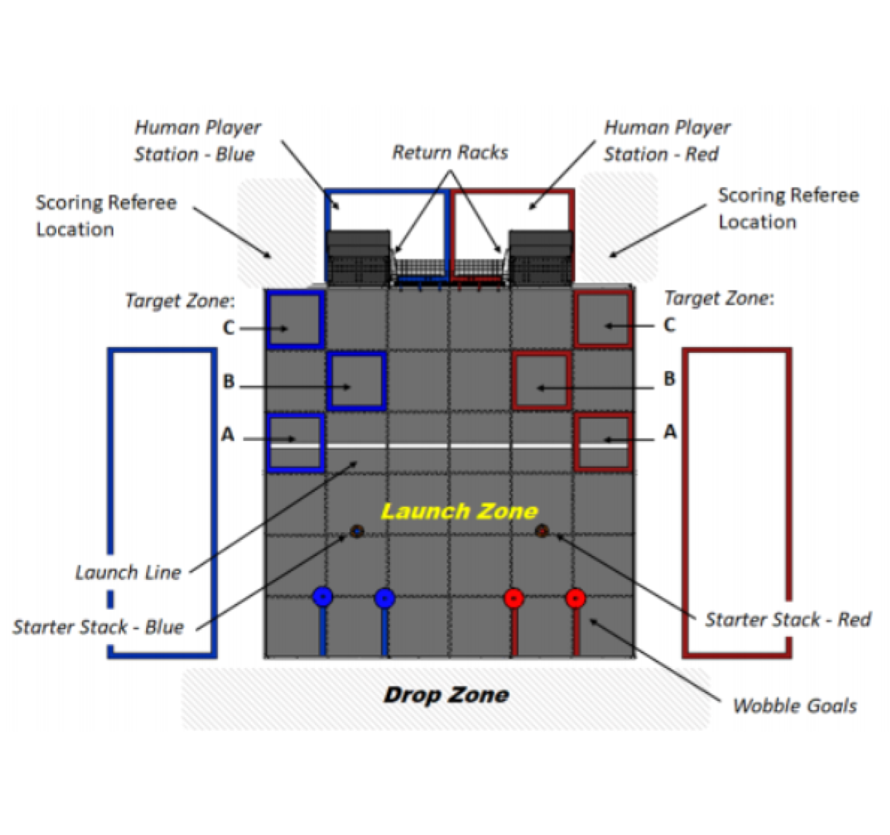
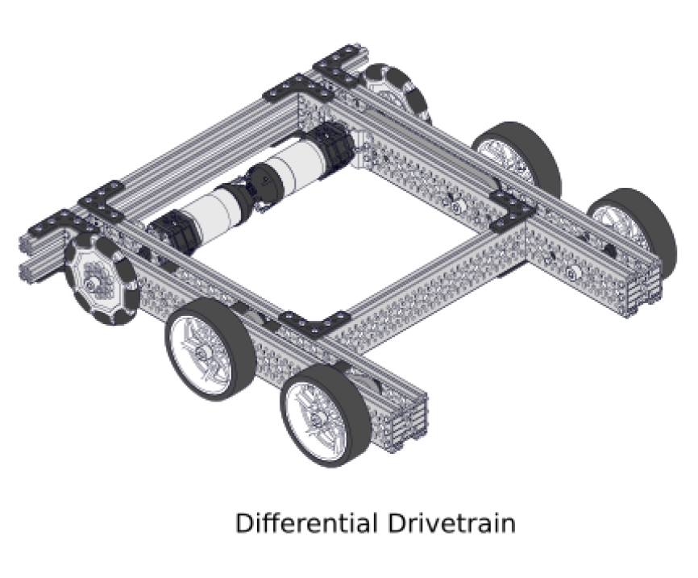
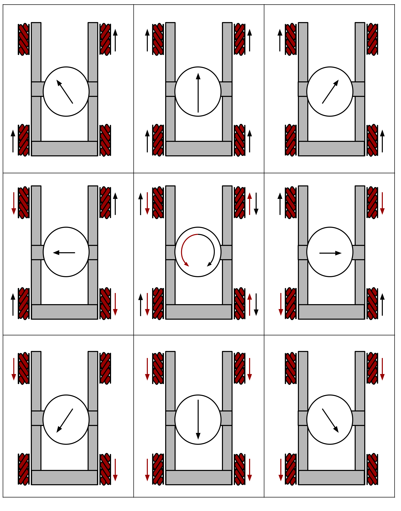
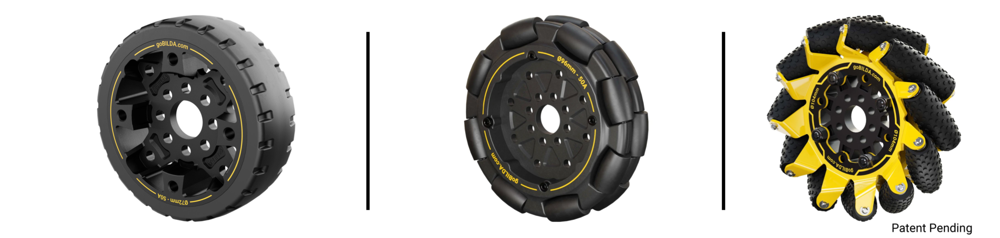
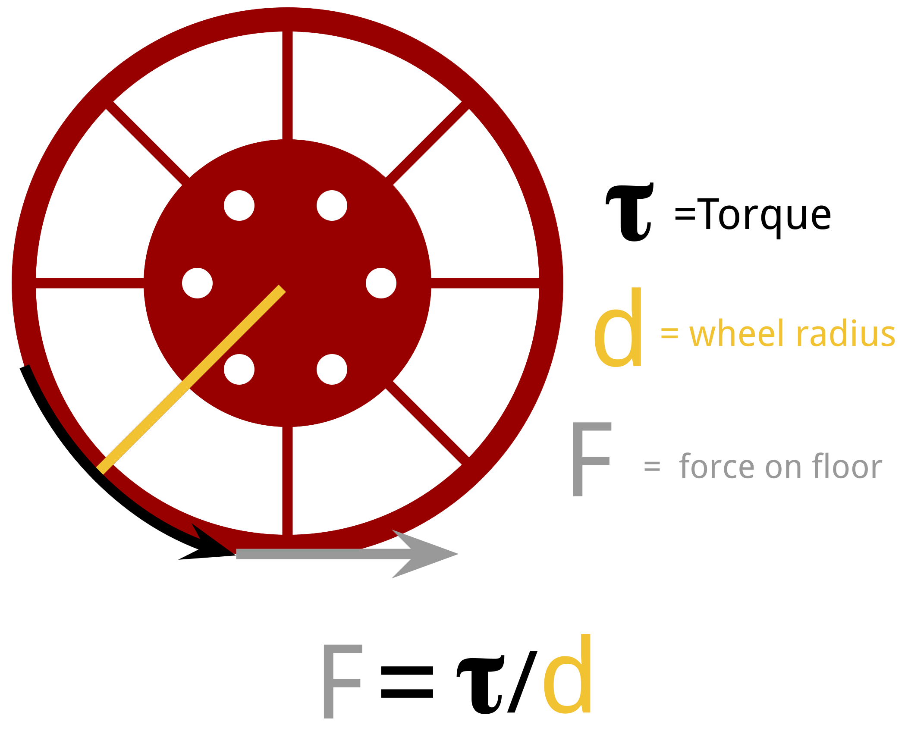
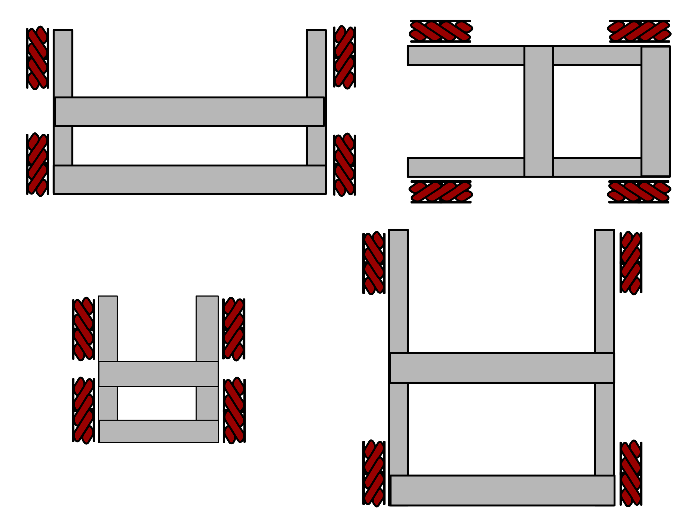

Reach game pieces, scoring zones, and endgame areas quickly and controllably.
Position the robot so intakes, lifts, and scoring mechanisms can do their jobs.
Carry the robot structure, battery, electronics, and mechanisms without flexing or tipping.
A good drivetrain is not just fast. It is square, reliable, repairable, stable, and matched to the game.

“Make a fast drivetrain.”
“Drive the scoring cycle path in under 8 seconds and align to the target within one robot width.”
“Build something strong.”
“Run ten match-length sessions without chain/belt adjustment, loose wheels, or motor overheating.”
A rookie FTC team has limited build time, needs to preserve motors for mechanisms, and wants reliable autonomous driving. What is the best starting point?
Choose one answer.
Turning scrub, long wheelbases, and losing time when lining up sideways.


Four omni wheels at angles. Omnidirectional, but mechanically unusual and needs vector programming.
Differential drive plus a sideways strafe wheel. Useful sometimes, but the center wheel must contact the floor consistently.
Strong contact area but heavier, higher friction, harder to turn, and more maintenance.
Best for pushing, acceleration, and simple differential drives. Too much traction can make turning harder.
Roll normally but slide sideways through rollers. Useful for reducing scrub or special holonomic drives.
Angled rollers combine wheel forces to create sideways and diagonal motion.

0 of 4 revealed.
More wheel torque, better acceleration, easier control, and less stalling, but lower top speed.
Higher theoretical speed, but less wheel torque, more current draw under load, and harder control.
Choose the ratio that makes the complete robot controllable, not the ratio that looks fastest on paper.
Enter values and calculate.
Actual speed will be lower because of load, friction, slip, roller losses, and battery voltage.
The force of the wheel on the floor is determined by both torque and friction. If you go past the total possible force of friction the wheel slips and adding more torque does not help.
Force ≈ torque ÷ wheel radius
Traction limit ≈ friction

Better sideways stability and more mechanism room, but harder in tight field spaces.
More front/back stability, but can increase turning scrub for tank drives.
Navigates well, but tight size constraints and may be less stable.

Mount heavy components low and near the center when possible.
Balance left/right weight for straight autonomous movement.
Balance mecanum corners so every wheel grips.
Slow the drivetrain when any extensions are out.
Select the helpful design choices.
Few parts and easy troubleshooting, but wheel loads can stress gearboxes.
Strong, adjustable, and good for linking wheels, but needs tension and alignment.
Quiet, light, and low maintenance, but require accurate center distance.
Compact and positive engagement, but require accurate spacing and support.
Good for learning differential drive, chain/gears, and flexible channel construction.
Good for teams using the REV ecosystem and needing lateral movement.
Low-profile mecanum platform using independent wheel motors and common goBILDA parts.
Often uses arcade or tank drive with forward/backward and turn commands. IMU correction can improve straight driving.
Combines forward, strafe, and turn. Field-centric control, heading hold, and speed modes can help drivers.
Forward, backward, turns, strafes, obstacles, and field paths.
Final robot weight, lift raised, mechanism running, low battery.
Match-length runs, wall bumps, motor temperature, loose fasteners, chain/belt check.
Click the cards in the order you would test them.
Each question is on its own slide.
Answer all 20 questions, then grade the quiz. Score at least 18 out of 20 to unlock the completion certificate.
This name will appear on your completion certificate.
What is the main job of a drivetrain?
Why should drivetrain choice start with game analysis?
Which drivetrain can move directly sideways when built and programmed correctly?
A six-wheel drop-center drive mainly helps a differential robot by:
What is a major advantage of a two-motor differential drivetrain?
What is a major tradeoff of a four-motor mecanum drivetrain?
For a mecanum drivetrain, weight should be:
What happens when drivetrain gear reduction is increased?
Which wheel type has angled rollers that allow omnidirectional movement in a four-wheel setup?
Which wheel type is useful for reducing scrub in some differential drivetrains?
A drivetrain frame that is not square can cause:
Why should the battery usually be mounted low and near the center?
What does chain drive allow a team to do?
What is one advantage of timing belts over chain when designed correctly?
What should teams test before calling a drivetrain competition-ready?
For a beginner FTC team prioritizing quick construction and reliability, a good first choice is often:
Which drivetrain is usually best when the game rewards frequent lateral alignment and the team has time to tune it?
What is a common cause of chain or belt failure?
Field-centric mecanum control usually uses which sensor?
What is the best summary of drivetrain design?
You need at least 18 out of 20 to unlock the completion certificate.
Not submitted.
After passing, advance to the final completion certificate.
5041 CyBear Robotics
Presented to
for successfully completing the
Complete after passing the required quiz.
Everyone has a place here.